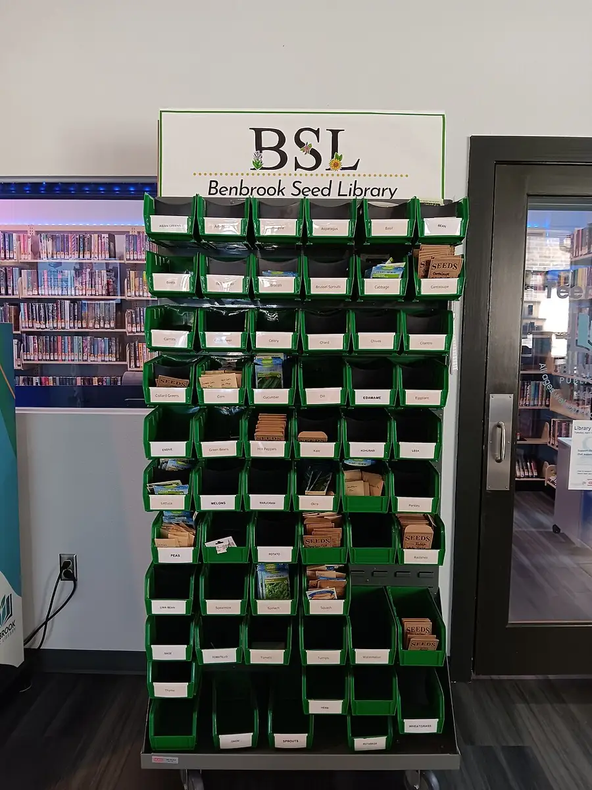

Seed Library Opening Day
A real lending library of seeds: every packet germination-tested, honestly labelled, and lent out on a ledger the teen librarians keep.
Before you begin
- Ages
- 13–14
- Group
- 4–20 kids
- Time
- 40–60 min
- Where
- Indoors & Outdoors
- Prep
- Some prep needed

Setup
Start a week before opening day, because the library's whole claim to honesty is made then: for every variety the library will lend, the librarians run the germination test themselves, ten seeds counted onto damp paper towel, kept damp in a labelled tray, checked daily, and counted again when the week ends. The number that sprouted is the number that goes on the packet, as a plain percentage, with the test's date: a packet labelled 'germination tested 8/10, this March' can be trusted in a way a packet of promises cannot. Sort the stock at the same bench: varieties separated, dead stock and anything mouldy composted without ceremony, and any variety whose test fails outright (two or fewer sprouts from ten) withdrawn from lending and logged as withdrawn. The library's first act of librarianship is refusing to lend seed it knows is spent. Set the opening-day table like a library, not a market stall: packets in variety order, the ledger open, the test trays on display, because the evidence is part of the exhibit.
Materials
- the seed stock (saved seed from the site's own beds, donated packets within date, or a seed swap's surplus, sorted by the librarians before opening day; unknown-origin seed is welcomed but labelled as unknown, in ink, on the packet)
- plain paper envelopes, one per packet (hand-folded is fine and traditional, the librarians fold the stock in the first session and the folding becomes the library's house style)
- the germination-test kit (shallow trays or plates, paper towel, a spray bottle of water, and counter space out of direct sun. The test bench, set up a full week before opening day)
- the ledger (a ruled notebook that is the library's memory: packet, borrower, date out, and the return column, seed returned from what the borrower grew, which is how a library of seeds is repaid)
Steps
- Opening framing, said at the table before the first loan: 'This is a library. It lends seeds the way the other library lends books: you borrow a packet, you grow what grows, and you repay the library the way seed libraries have always been repaid, with seed from your strongest plant, dried and brought back, so next year's borrowers grow from this year's best. Every packet on this table was tested by us, this month, and the test is on the label: eight out of ten sprouted means eight out of ten sprouted. If a packet says untested, it means exactly that too. This library does not exaggerate, because a gardener plans a bed around what a packet says, and a bed is a season you cannot have back.' The librarians introduce the ledger and its columns, and the borrowing rules are stated whole: one packet per borrower per visit, the ledger signed in real names, returns welcomed whenever the season gives them.
- The testing story, told from the trays: before any lending begins, the librarians walk the first borrowers through the test bench, the trays still on display, sprouted and unsprouted side by side, and each librarian presents one variety's evidence: how many were counted, how the week ran, what the count was, and what the label therefore says. Questions are answered from the trays, not from memory. A variety whose label says 6/10 is presented at exactly its worth, with its honest use named ('six from ten is a packet you sow thickly and thin. The label tells you so, which is what labels are for'), because the library's credibility is built precisely where a lesser operation would quietly round up.
- Lending round: borrowers choose, librarians lend. Each loan is a small ceremony of the ledger, packet named, borrower named, date written, and the librarian's one piece of earned advice given with it, drawn from the packet's own evidence and the season: sowing depth in plain words, indoor start or direct sow, and the honest wait ('germination in about a fortnight if the soil is warm, the test took six days on the bench, and a cold bed is slower; the packet is not late, the spring is'). Librarians who do not know an answer say so and write the question in the ledger's back page, the library's research list, the second founding habit: a library that records what it does not know yet will know it by next season.
- Returns-and-savings desk, explained before it is needed: the librarians demonstrate the repayment craft on a demonstration plant's worth of seed heads. How to tell ripe seed from green, how drying is done (a paper bag, a warm shelf, a week of patience, a shake to hear the rattle), and how a return is received: variety, grower, the plant it came from described in one line ('the tallest of the row, north bed'), and the returned seed logged as next year's stock with its parentage on its future packet. A borrower whose crop failed entirely owes the library nothing but the story, and the story is entered in the ledger too, a failed bed with a recorded reason ('sown before the last frost, our error, the label now says so') is stock of another kind, and the library keeps it.
- Closing the opening day: the table is counted, packets out, packets remaining, the ledger's loans read back aloud by the librarians in the session's official audit shape, and the research list is read with it, each question assigned to a librarian to answer before the next lending day, from a book, a grower, or next month's test bench. The tell-back is said over the ledger: 'The library opened with tested seed and honest labels. Nothing on this table promises more than its tray grew. What comes back will be better than what went out, seed from the strongest plants, and stories from the rest, and next spring's librarians will inherit a ledger that tells the truth. That is the whole institution. It runs on that.' The ledger and the remaining packets are stored dry, dark, and labelled with the librarians' names and the season, where next year's bench will find them.
Variations
Easier: A paper-only version (no seed available yet): the librarians build the whole institution as a rehearsal, packets folded, a test run on a single donated variety, the ledger opened, so the library's first lending day, when stock arrives, opens on a running system.
Harder: A swap-day version: opening day doubles as a seed swap. Outside growers bring surplus, every incoming variety is benched for a week's test before it joins the lending stock, and the ledger's first pages fill with donors, who are the library's founding friends.
Safety
Seeds are stock, not food: nothing on the table is eaten, tasted, or snacked on. Some seed is treated, some is simply not food, and the librarians' rule covers all of it without needing a list. Hands are washed after handling stock and always before eating anything else, and any tray that turns mouldy during its test week is composted whole by an adult wearing the bench's gloves. Its variety is retested from a fresh count, and the mould is recorded in the log as a result, not hidden as an embarrassment. Packet labels carry the variety's plain name and the test result; nothing is labelled with a claim the bench did not make, and any seed of unknown origin or unknown treatment is labelled unknown in ink, borrowers deserve to know what the library does not know. The ledger holds borrowers' real names because it is a working record kept by the adults between sessions, under the site's ordinary rules for such things.
Source: not listed yet.
Inclusion notes
Librarianship is a desk with many chairs: the testing bench needs counters, dampness-keepers, and label-writers; the lending table needs a ledger-keeper, a packet-finder, and the adviser who gives the sowing advice, and every one of those jobs can be done seated, one-handed, by direction, or by a librarian whose strength is the ledger's memory rather than its handwriting (the audit read-back at closing is an oral honour, rotated by list). Advice and labels can be given in any register the borrowers need, spoken, written large on the packet, drawn as the sowing-depth line the library uses on every label, and the research list is read aloud in full at closing so that no librarian needs to have read handwriting to own a question. The library's founding rule helps here too: it lends to every borrower who signs, at the same ceremony, with the same honest label.
Tried this? Rate it
Your ratings live in this browser only. Nobody else can see them. There are no community ratings here; every star on this card is yours.
Rate this activity, add a note, or write a reflection
Quick reflection
Optional, saved with your rating, and exported with "Copy my week".
Full activity card,